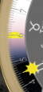
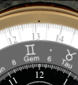
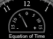

 The outer ring is a 24-hour dial which rotates so that the time of local solar noon
("local apparent noon" ) is at the top.
The Sun indicator shows the local 24-hour time (04:30 in this example).
The outer ring's background
is divided into day and night sections with twilight in between.
These regions move according to the season and the watch's latitude.
The straight edges of the yellow semi-circles mark the exact times of sunrise and sunset
(05:53 in this example).
When there is no sunrise or sunset (at high latitudes) they disappear behind a cover.
Also on the outer dial is a green triangle indicating the current UTC time.
) is at the top.
The Sun indicator shows the local 24-hour time (04:30 in this example).
The outer ring's background
is divided into day and night sections with twilight in between.
These regions move according to the season and the watch's latitude.
The straight edges of the yellow semi-circles mark the exact times of sunrise and sunset
(05:53 in this example).
When there is no sunrise or sunset (at high latitudes) they disappear behind a cover.
Also on the outer dial is a green triangle indicating the current UTC time.
The next ring in is marked with the constellations of the zodiac.
It rotates so that the constellation currently transiting the meridian (i.e., due south for northern observers) is at the 12 o'clock position on the watch
(between Gemini and Taurus in this example).

The Sun indicator also shows the position of the Sun in the sky relative to the zodiac.
Another way of saying this is that the zodiac dial rotates once per sidereal day; its numbers represent local apparent sidereal time
(approximately, for times within a few centuries of the present).
The Moon indicator shows the position of the Moon with respect to the zodiac and the Sun
(but it is not related to the time dials).
Note that the positions of the constellations are (approximately) astronomically correct for the present era and do NOT correspond to the "signs" of Western astrology. (The Western division of the sky into constellations is at least 2500 years old; for most of that time astronomy and astrology were the same thing. Though in modern times an astronomer will cringe at being called an astrologer, much of the ancient terminology remains in use in science.)

The small half-dial at 12 o'clock shows the "Equation of Time".
Though you might think from the name that this is the Holy Grail of 21st century physics,
it is actually just the difference between clock time and apparent solar time (or sundial time)
for the standard meridian of the local time zone. Positive means the sundial is ahead.
This was indeed of critical importance to mariners before the days of electronic navigation.
They could determine their longitude by observing the time of local noon and comparing that to their chronometers.
But that comparison requires adding in the Equation of Time; without that correction the calculation could be off by hundreds of miles.
The outer dial, with local solar noon at the top, does not always have 12 o'clock at the top for several reasons. It moves ahead (counterclockwise) for daylight time. It is offset by the Equation of Time (which can be a quarter of an hour either way). And the distance away from the standard meridian of the time zone can result in a shift of more than an hour in some cases.
In Set mode, the upper pusher advances 24 hours; the lower one advances one hour. To see a fast animation of the changing length of the day press and hold the month window.
The large moon image at 6 o'clock shows the Moon's current phase, in a display like Chandra's. Tap it (in Set mode) to advance to the next quarter phase.
The dial at 10 o'clock shows the local apparent solar time (sundial time for the current longitude).
The local apparent sidereal time is shown in the dial at 2 o'clock.
As on the front, the green triangle indicates UTC.
In Set mode, pressing the pushers shows a nice animation of the Moon's motion.